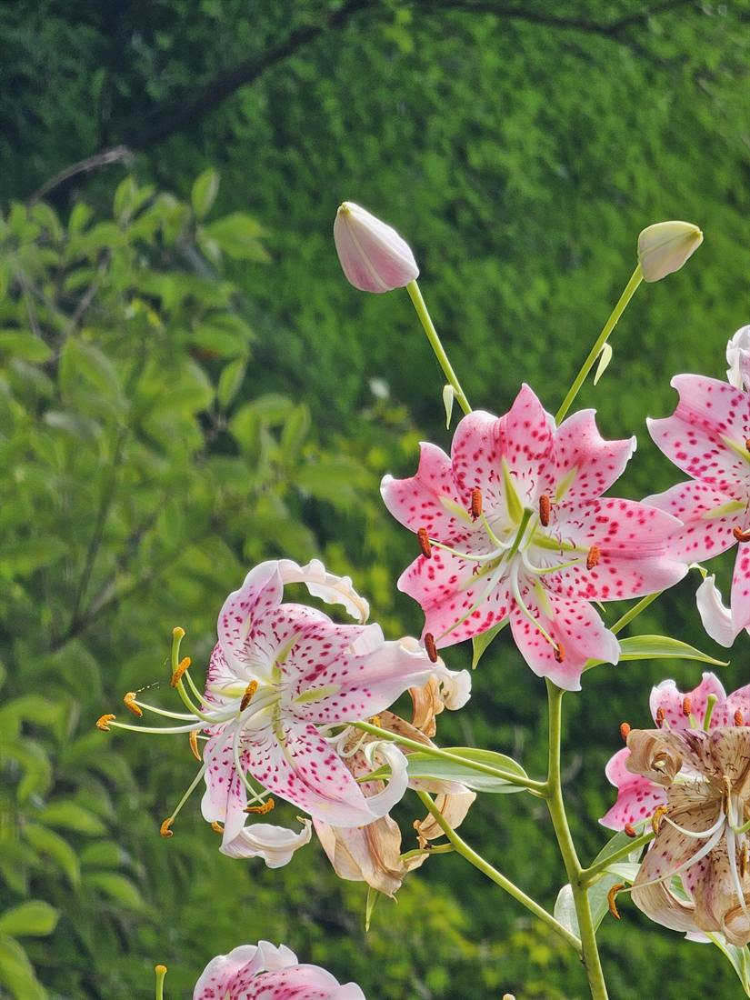
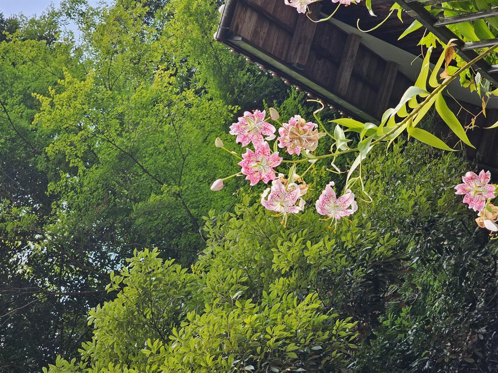

カノコユリ（鹿の子百合）
Lilium speciosum Thunb.
別名 · ドヨウユリ（土用百合）／タキユリ ／ 野生は絶滅危惧（環境省レッドリスト）
ユリ科 · Liliaceae（ユリ属）── この図鑑で初めての科
燻太さんの問い「こんなに鮮やかで、何輪も咲かせているのは何ていう種？」……この日本の野のユリが、世界の高級ユリ「カサブランカ」のお母さんだった。
見分けたところ ── なぜカノコユリと言えるか
- 花被片が極端に反り返る（Turk's-cap＝ターバン型）。
- ⭐白〜桃色の地に、盛り上がった濃紅色のつぶつぶ＝鹿の子模様（下の節）。
- 長い花茎の先に5〜20輪をまとめて咲かせ、うつむいて咲く。雌雄のシベが花の外へ長く突き出る。→ 燻太さんの「何輪も咲かせている」は、この種の性質そのもの。
- 開花は7〜9月（撮影は8月14日＝ぴったり盛夏）。別名ドヨウユリ（土用百合）も、この花期から。
⭐ 「鹿の子模様」の正体 ── 盛り上がった斑点
- 花びらの赤い斑点は、ただの平らな模様ではなく、表面が“つぶ”に盛り上がった突起（点上突起・papillae）。指でなでると、ざらっとする。
- ⭐この赤い盛り上がりが、鹿の背の白い斑点をまねた染め物「鹿の子絞り」に似ている＝和名カノコユリの由来。模様が“凹凸”になっているのが、この種の見分けの決め手（近縁のユリは平らな斑点が多い）。
⭐⭐ 日本の野のユリが、世界のユリの母 ── カサブランカの親
- ⭐⭐あの高級ユリ「カサブランカ」をはじめとする〈オリエンタル・ハイブリッド〉は、日本原産のユリを親にして作られた。その主役が、カノコユリ・ヤマユリ・ササユリ・サクユリ——この子（カノコユリ）は、世界のユリの“お母さん”の一人（カサブランカは1970年代後半、カノコユリとサクユリなどをもとに育種）。
- ⭐交配の歴史は1800年代末、アメリカのフランシス・パークマンがヤマユリ×カノコユリを交配したのが出発点（Lilium × parkmanii）。日本の山野のユリが海を渡って、世界中の花屋さんに並ぶユリになった。
- ⭐030 バラ・047 ダリア・043 イチゴと同じ「品種の宝庫」だけれど、ユリは日本の“原種そのもの”が世界の園芸を作り替えたところが物語。
⭐ だれを呼ぶための花か ── 夜の蛾を呼ぶ
- カノコユリは夜に強く香る。うつむいて反り返った花の形と、外へ長く突き出た雄しべ・雌しべは、ホバリングしながら吸蜜する大きな蛾＝スズメガの体に、葯と柱頭をちょうど当てるためのしくみ（＋日中はアゲハなどの蝶も訪れる）。→ 🦋「だれを呼ぶための花か」の小道へ。
- ⭐034 ペチュニア（白＋夜の香り＝スズメガ）・027 ニオイバンマツリ（夕方から香る）と同じ「夜のお客さん」。
- ⭐⭐そして、052 → 053 → 054 で、🦋の小道に“花と実り”の三部作がそろった：
052 オリーブ＝だれも呼ばない（風にまかせる）。／053 シャガ＝呼んでも実らない（三倍体のクローンで種ができない）。／054 カノコユリ＝ちゃんと香りと形で夜の蛾を呼び、ちゃんと種を実らせる。——呼びかけと実りが、そろっている花。
球根は「葉っぱの集まり」＋ ふやし方 ・ 絶滅危惧
- ⭐ユリの球根（鱗茎）は、“葉”が変形した鱗片が重なったもの＝百枚の“葉”が合わさる姿から「百合（ユリ）」の字。土の中の玉ねぎのようなものは、じつは葉の集まり。
- ユリは種でも、鱗片（球根のかけら）でも、木子でもふえる。種でふえられるところが、種のできない 053 シャガとは対照的。
- ⚠園芸ではよく見るけれど、野生のカノコユリ（九州などの自生地）は激減し、環境省レッドリストの絶滅危惧種。庭やお店で会うのは栽培のもの。自生地の株は掘らない・採らない。